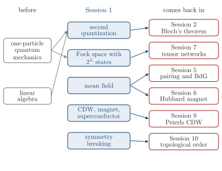

Advanced Quantum Materials 2027 · All lectures · Lecture notes
Session 1. Second Quantization, Mean-Field, and Spontaneous Symmetry Breaking
Video lecture · Landscape lecture · session1.ipynb · PDF of the notes
This is the first session of the course, so from before we need only the quantum mechanics of a single particle and some linear algebra. We start with the question that organizes the whole course. How do we go from a single atom, which we understand rather well, to a quantum material, where electrons that move together give rise to phenomena that no single atom can show?
To answer this question we need a new language, which is second quantization, and a first tool to use it, which is mean-field theory. First we will see why a fixed number of particles is not enough, and how creation and annihilation operators solve this. Then we will see that the many-body Hilbert space grows as \(2^L\), and what it means that a symmetric Hamiltonian has a ground state that is not symmetric. At the end we will use mean-field theory three times. From the same starting Hamiltonian we obtain a charge density wave, a magnet and a superconductor, only by changing the sign and the geometry of one interaction term. These three states break translational symmetry, time-reversal symmetry and gauge symmetry, and the rest of the course is built on them.

- In Session 2 we go back to the single-particle part of the Hamiltonian, and translational symmetry diagonalizes it with Bloch’s theorem, in Section 2.5.
- Superconductivity comes back in Session 5, where the pairing term of this session is written with the Nambu spinor of Section 5.8.
- Magnetism comes back in Session 6, with the Hubbard model solved again in Section 6.3 and the magnons of Section 6.13.
- The growth of the Hilbert space as \(2^L\) is the starting point of the tensor networks of Session 7, in Section 7.3.
- In Section 10.6 the local order parameters of this session are compared with topological order.